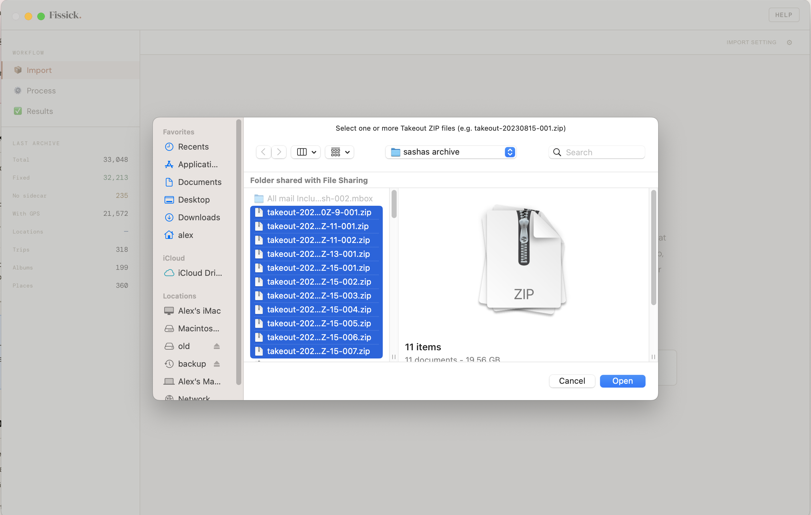
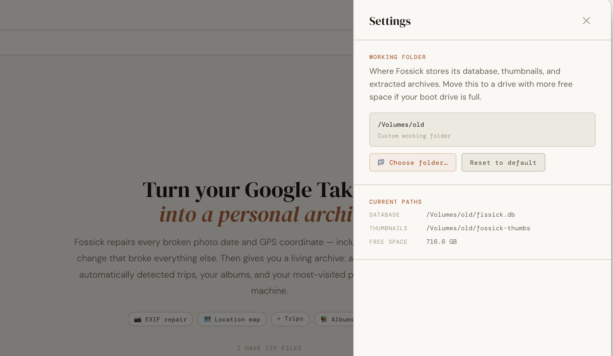

Before Fossick can do anything, your Google Takeout files need to be downloaded to your computer. Here's how.
Step 1 — Download your files from Google
Fossick works with the ZIP files that Google sends you when you request a Takeout export. These files must be downloaded to your computer first — Fossick reads them directly from your hard drive and never connects to Google on your behalf.
If you haven't requested your export yet, go to takeout.google.com, select Google Photos (and optionally Location History), and follow the steps. Google will email you one or more download links when your archive is ready.
A Google Photos library built up over many years can easily be 50–200 GB across 10 or more ZIP files. Each file needs to be fully downloaded before Fossick can process it. Make sure you have enough free space on the drive where you're saving them — you'll need roughly the same amount of space again for Fossick's working files.
Download all the ZIPs before opening Fossick. They are all part of one export and need to be imported together.
Step 2 — Select your ZIP files in Fossick
Once all your ZIP files are downloaded to a folder on your computer, open Fossick. On the Import screen, click Select ZIP files and choose all the ZIPs at once — hold ⌘ (Mac) or Ctrl (Windows) to select multiple files.
You don't need to unzip anything. Fossick reads the ZIPs directly.

Google splits large libraries across multiple ZIP files — typically named takeout-…-001.zip, -002.zip, and so on. These belong together. Select all of them at once; Fossick merges them automatically. Processing them one at a time will give incomplete results.
What Fossick looks for inside your export
Google Takeout organises your photos into folders like Photos from 2022, Photos from 2023, and so on, plus a folder for each album. Alongside every photo there is a small companion file — called a sidecar — that contains the original date and GPS coordinates that Google strips from the photo itself.
Fossick scans all of this automatically. You don't need to reorganise or rename anything before importing.
Including your location history
If you also exported Location History from Google, Fossick will find it automatically inside the Takeout folder. Location history powers the Trips and Places views. If you didn't include it, those sections will still work using the GPS coordinates stored inside your photos — but the location track will only cover moments when you were actively taking photos.
If photos from certain years don't appear, you may need to request a new export — Google Takeout sometimes omits photos from large libraries in a single run. You can import a second export into Fossick and it will merge the results without duplicating photos.
Import Setting — choosing where Fossick stores its files
When Fossick processes your photos it creates a database, generates thumbnails, and extracts your ZIP archives. By default these working files are stored inside your Documents folder. If your main drive is nearly full, or if you'd prefer Fossick to use an external drive, you can change this before you start.
Click Import Setting (top right of the Import screen, next to the ⚙ gear icon) to open the Settings panel.

The Settings panel shows three things:
- Working Folder — the drive and folder where Fossick stores its database and thumbnails. Click Choose folder… to move this to a different location, for example an external drive with more free space.
- Current Paths — the exact paths to the database file and the thumbnails folder, so you know precisely where Fossick's files live.
- Free Space — how much space is available on the selected drive. As a rough guide, allow at least 10–15% of your photo library size for Fossick's working files.
Click Reset to default to move everything back to the Documents folder. Close the panel with the × button in the top right corner.
If you want to use a different working folder, set it before clicking Start Processing. Moving the folder after processing has started will interrupt the run.
Ready to process
Once your ZIP files are selected and your working folder is set, click Process archive → to begin. See Processing for what happens next and how long to expect it to take.